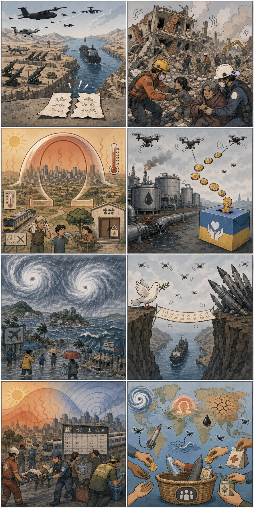

1
미군, 이란 드론·미사일 기지 공습 보도
내용요약미국이 이란의 선박 공격을 휴전 위반으로 지목한 뒤 이란 드론·미사일 기지를 직접 공습했다는 보도가 나왔습니다. 호르무즈 해협에서는 화물선 피격과 안전 보장 문제도 함께 쟁점화되고 있습니다.
예상여파휴전 관련 합의의 실효성이 흔들릴 가능성이 있으며, 해상 운송 보험료와 에너지 가격, 중동 내 군사적 긴장에 단기 압력이 커질 수 있습니다.
내용요약미국이 이란의 선박 공격을 휴전 위반으로 지목한 뒤 이란 드론·미사일 기지를 직접 공습했다는 보도가 나왔습니다. 호르무즈 해협에서는 화물선 피격과 안전 보장 문제도 함께 쟁점화되고 있습니다.
예상여파휴전 관련 합의의 실효성이 흔들릴 가능성이 있으며, 해상 운송 보험료와 에너지 가격, 중동 내 군사적 긴장에 단기 압력이 커질 수 있습니다.
내용요약베네수엘라 강진 이후 사망자와 부상자가 계속 늘고 있다는 보도가 이어졌습니다. 여진이 반복되는 가운데 장비 부족과 취약한 건축 구조가 피해를 키웠다는 지적도 나옵니다.
예상여파국제 구호 수요가 커지고, 임시 주거·의료·식수 지원이 시급해질 가능성이 있습니다. 향후 재건 과정에서는 내진 기준과 공공 인프라 복구가 핵심 과제가 될 전망입니다.
내용요약프랑스 등 유럽 곳곳에서 40도를 넘는 폭염이 관측되며 일부 지역은 역대 최고기온 보도가 나왔습니다. 폭염은 서유럽을 넘어 동쪽으로 확산되는 양상입니다.
예상여파전력 수요 급증, 철도·항공 운행 차질, 취약계층 건강 피해가 확대될 수 있습니다. 냉방 인프라와 기후 적응 정책을 둘러싼 논의도 강화될 가능성이 큽니다.
내용요약러시아 석유 판매 수익을 우크라이나 지원에 연결하는 방안과 우크라이나의 대규모 드론 공습 보도가 함께 부각됐습니다. 크림반도와 정유시설 주변의 긴장도 높아진 상황입니다.
예상여파에너지 제재의 집행 방식과 전쟁 재원 차단 효과를 둘러싼 국제 논의가 커질 수 있습니다. 러시아 내 방공·정유 인프라 방어 부담도 계속될 가능성이 있습니다.
내용요약태풍 메칼라와 히고스가 동시에 북상하면서 일본 열도에 폭우 우려가 제기됐습니다. 대만 남부 침수와 일본 여행·도시 교통 차질 가능성도 함께 보도됐습니다.
예상여파항공·철도 운항 지연과 지역 침수 피해가 발생할 수 있어 여행 일정과 물류에 변동성이 커질 전망입니다. 한반도 영향은 현재로서는 제한적일 가능성이 거론됩니다.

중동 긴장, 베네수엘라 지진, 유럽 폭염, 우크라이나 전쟁·에너지 쟁점, 동아시아 태풍을 상징적으로 담았습니다.